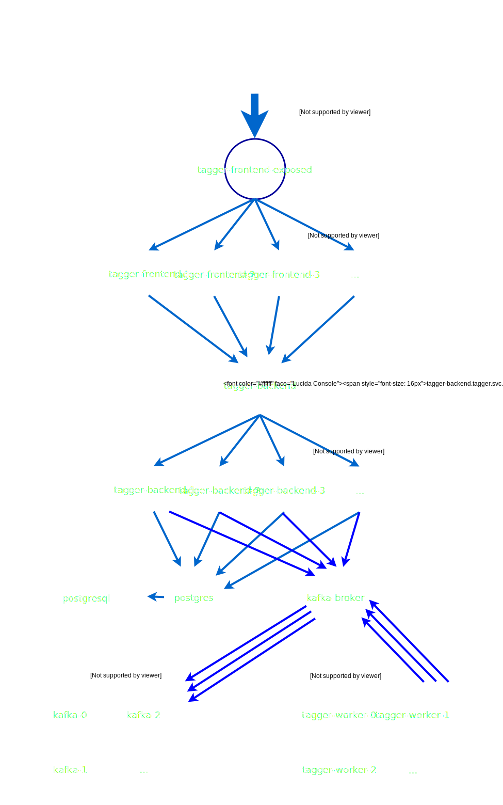

Frontend

Backend

- - Scala Code läuft auf der JVM
- - Möglichkeit, Java-Code einzubinden
- - Funktionale Sprache mit Objektorientierung
incoming-pics
predictions
kubernetes pod: tagger-worker
 wrapper script
wrapper script

wrapper script
image
prediction
